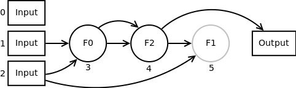

Cartesian Genetic Programming (CGP) is a form of Genetic Programming (GP) which is itself an Evolutionary Algorithm (EA). CGP was invented my Julian Miller and Peter Thomson in 1999 and it still under active development and academic research.
| Cartesian Genetic Programming | Cartesian Genetic Programming (CGP) is a form of Genetic Programming (GP) which is itself an Evolutionary Algorithm (EA). |
| Evolutionary Algorithms | Evolutionary Algorithms are a superset of CGP. |
| Cartesian Genetic Programming | Now Evolutionary Algorithms have been introduced CGP can be described. |
Evolutionary Algorithms are a superset of CGP. In order to explain CGP first Evolutionary Algorithms are introduced.
Evolutionary Algorithms are a set of Artificial Intelligence / Machine Learning search heuristics based on Darwinian evolution. The idea is to describe a ‘population’ of possible solutions to a given task in software. Here each solution is called a ‘chromosome’ or ‘genotype’ taking the terminology form biology. Each of these chromosomes (solutions) is then assessed and given a ‘fitness’ score indicating how well it performs on a given task. The fittest of these chromosome are then kept and the weakest removed mimicking survival of the fittest or natural selection. The remaining chromosomes are then treated as ‘parents’ and used to create new ‘child’ chromosomes. This process can involve sexual or asexual reproduction i.e. use one parent or two. These new ‘child’ chromosomes (with/without their parents) form the population of the next ‘generation’. This process is repeated until a ‘termination condition’ is reached. Termination conditions often include finding a suitable solution and a time restraint.
The process is shown below in pseudo code
create initial population of chromosomes while(solution not found) calculate chromosome fitnesses Select parent chromosomes create next generation chromosomes end
Evolutionary Algorithms therefore involve several stages which are now described further.
The original population typically takes one of two forms. Either it is populated with randomly generated chromosomes or it is seeded with specific chromosomes. These specific chromosomes may include partial solutions which need to be completed or known solutions to be refined.
The function which assigns a fitness to each chromosome is commonly called the ‘fitness function’. How the fitness function operates is dependant upon the problem being solved and the chromosome encoding, it must however assign a fitness value to each chromosome. As this fitness value is only used to choose between chromosomes it is not necessary that the perfect fitness be known; only that one chromosome is fitter than another.
The method used to select the members of the population to survive and/or breed is referred to as the ‘selection scheme’. Selections schemes can be very simple, just select the fittest chromosomes, or more complex, select chromosomes which represent the most novel solutions.
There are two main ways in which new child chromosomes can be created from their parents. The first mimics asexual reproduction where the child is simply a mutated copy of the parent chromosome. The second mimics sexual reproduction where the child contains genetic material from both parents with or without mutation. This later method is refereed to as ‘recombination’ or ‘crossover’. How mutation and recombination are implemented again depends on the encoding of the chromosomes and the type of mutation and recombination used.
Now Evolutionary Algorithms have been introduced CGP can be described.
Cartesian Genetic Programming (CGP) evolves chromosomes which represent functioning programs. That is, the solutions being evolved are computer programs which compute outputs based on inputs. These programs can be symbolic equations, Boolean logic circuits, neural networks or pretty much anything which consists of connected computational elements. For instance in the case of symbolic equations each equation is made up of separate functions (addition, subtraction, multiplication etc). CGP can be used to create programs which “link” together these separate functions to create a symbolic equation. This equation could then be used to do something useful.
CGP chromosomes describe acyclic (or sometimes cyclic) graphs of functioning nodes. Each chromosome is comprised of three types of genes: connection genes, function genes and output genes. Connection genes describe how each node is connected together. Each node in the graph can connect to any of the program inputs or to other nodes. Function genes describe the functionality performed by each node in the graph (in the symbolic equations case they may be addition, subtraction, multiplication etc). The set of possible functions which can be performed by each node is defined by the user. Output genes describe which nodes in the graph are used as the program outputs. Program outputs can be taken from any of the program inputs or the output of any node within the graph.
An example CGP chromosome is given below. This chromosome describes an acyclic graph comprised of three inputs, three nodes and one output. The arity of each node is two.
When the chromosome is executed, the inputs to the program are applied to the input nodes (0, 1 and 2 in this case). Then each of the function nodes calculate their output based on their inputs (nodes 3, 4 and 5 in this case). Finally the output of the program is taken (in this case the output of node 4). Typically a CGP chromosome will be ran multiple times with different inputs to assess its behaviour. If the program operates as desired it will score a good fitness, if not a bad fitness.
There are a few additional interesting things to note form the given chromosome
Now the typical evolutionary process used by CGP shall be described. However nearly every aspect can be altered if desired.
The evolutionary strategy commonly used by CGP is to select one parent from each generation and use it to produce four children via mutation alone. The next generation then comprises of the selected parent and the four generated children. The population size is therefore five; four children plus one parent. This strategy is formally written as (1 + 4)-ES.
The initial population is usually populated with randomly generated chromosomes. The user defines the number of program inputs, internal nodes, the arity of each node and the number of program outputs. The chromosomes are randomly generated using these given constraints.
For instance each of the specified chromosome nodes will be given a random function gene from the available function set. Each of the inputs of each of the nodes will be given a random connection gene. Finally each output gene shall be set as a randomly chosen program input or node within the graph.
Typically before the fitness of a CGP chromosome is calculated the active nodes are determined. This is because chromosomes are often ran multiple times by the fitness function and calculating the outputs of nodes which never contribute to the operation of the phenotype is a waste of computational time. Calculating the the active nodes is an O(n) operation which is only undertaken once for each chromosome.
The exact fitness of the chromosomes depend on how well the chromosome performs on a given task.
CGP typically selects the fittest member(s) of the population to become the parent(s).
CGP typically only uses mutation to create the children form the selected parents. Common mutation methods used are probabilistic mutation and point mutation.
Probabilistic mutation changes each gene to a new random valid allele with a given probability. This allows for the number of genes actually mutated to have a Gaussian distribution. Point mutation randomly selects a given number of genes in the parent and mutates these to create the child. The number of genes selected is the mutation rate time the number of genes. This fixes the number of genes mutated each time a child is created.
That concludes a very brief introduction to CGP. For more details see the CGP homepage http://www.cartesiangp.co.uk/ which includes a ten slide introduction http://www.cartesiangp.co.uk/cgp-in-nutshell.pdf. Additionally there is a CGP book called, you’ve guessed it, “Cartesian Genetic programming” ISBN-10: 3642173098 ISBN-13: 978-3642173097. Finally there are multiple academic publications, just search “Cartesian Genetic programming” in google scholar.